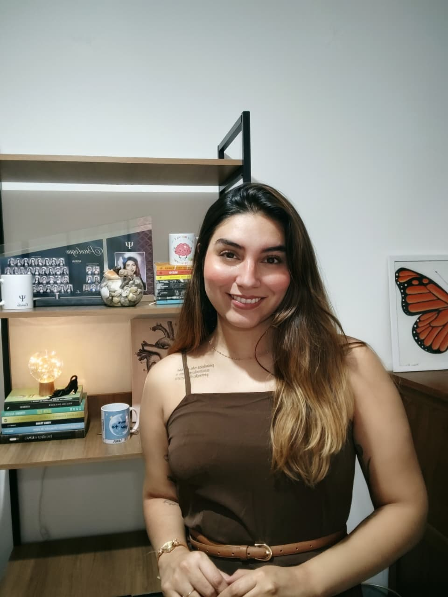

01
Escuta
A escuta psicanalítica não se limita ao que é dito de forma consciente. Ela se orienta também pelos lapsos, repetições, silêncios, contradições e por aquilo que insiste em retornar, revelando algo da singularidade de cada sujeito.
PSICÓLOGA · PASSO FUNDO · RS
Pela psicanálise, exploramos suas experiências, emoções e relações buscando, no próprio tempo, encontrar novos sentidos dentro da sua história.
Sobre

Sou Camila Saraiva de Lima, psicóloga de orientação psicanalítica. Atendo adultos de forma presencial, em Passo Fundo · RS, e online para todo o Brasil.
Meu encontro com a psicanálise surgiu do reconhecimento de que nem toda experiência humana pode ser compreendida por meio de respostas rápidas ou soluções padronizadas. Há questões que precisam ser escutadas antes de serem interpretadas, conflitos que demandam tempo para serem elaborados e sofrimentos que necessitam de um espaço onde possam encontrar palavras.
Sustento minha prática clínica por meio do estudo contínuo, da supervisão e da formação permanente, entendendo que a escuta analítica exige constante aprofundamento e reflexão. Acredito na construção de um espaço ético e acolhedor, onde cada pessoa possa falar de sua história, de seus impasses e de seus desejos, respeitando a singularidade de seu percurso.
Como funciona a terapia
Cada etapa respeita a singularidade do encontro. Não há fórmulas: há acolhimento, ética e a constância da escuta.
Um primeiro e-mail ou mensagem para apresentarmos, com tranquilidade, o que você procura.
Um encontro de escuta, sem compromisso de continuidade. Um espaço para sentir se há ressonância.
Encontros regulares, semanais, em um ritmo construído a dois com tempo para a palavra e para o silêncio.
Um percurso que se desdobra. Não há roteiro: há presença, escuta e o trabalho paciente da elaboração.
Abordagem
Trabalho a partir da psicanálise — uma prática de escuta que considera a singularidade de cada sujeito e reconhece a importância do inconsciente naquilo que pensamos, sentimos e repetimos. Meu olhar clínico volta-se para os sintomas, os conflitos, os afetos e os modos particulares como cada pessoa constrói sentido para sua história. As sessões acontecem semanalmente, com 50 minutos, online ou presencialmente em Passo Fundo · RS.
01
A escuta psicanalítica não se limita ao que é dito de forma consciente. Ela se orienta também pelos lapsos, repetições, silêncios, contradições e por aquilo que insiste em retornar, revelando algo da singularidade de cada sujeito.
02
Não se trata de acelerar processos ou alcançar resultados imediatos, mas de permitir que cada elaboração aconteça no tempo necessário para que algo possa, de fato, produzir transformação.
03
A palavra ocupa um lugar central no trabalho analítico. Ao falar livremente, o sujeito pode construir novos sentidos para sua história, reconhecer repetições e encontrar outras formas de se relacionar com aquilo que o faz sofrer.
04
Sigilo, respeito e a recusa em prescrever modos de viver. A análise convida o sujeito a se responsabilizar pelo próprio desejo.
Áreas de cuidado
Estes são alguns dos temas frequentemente trazidos para a análise. Não são categorias fechadas — apenas portas pelas quais um percurso pode começar.
I
Compreender o que se repete, dar nome ao que aperta, encontrar pausas possíveis.
II
Reconhecer a própria voz para além das exigências herdadas e dos olhares de fora.
III
Investigar os laços que se constroem — com o outro, consigo e com a própria história.
IV
Atravessar perdas no próprio tempo, sem pressa de superar aquilo que merece ser vivido.
V
Aproximar-se de sentimentos contraditórios sem precisar de respostas imediatas.
VI
Reencontrar-se aos poucos, escutando o que ainda não havia tido espaço para ser dito.
Quem caminhou comigo
Depoimentos compartilhados com autorização e mantidos em forma anônima, em respeito ao sigilo profissional.
Perguntas frequentes
As sessões online acontecem por videochamada, em ambiente seguro e privado. Mantemos o mesmo cuidado, ética e regularidade dos encontros presenciais — basta um espaço tranquilo e uma boa conexão.
Cada sessão tem 50 minutos. A regularidade habitual é semanal, e o horário é reservado para você ao longo do processo.
É um encontro inicial para que possamos nos conhecer, conversar sobre o que te trouxe até a terapia e perceber se há ressonância para começarmos um processo. Não há compromisso de continuidade.
É uma escuta que considera o inconsciente — aquilo que diz de nós sem que saibamos. Trabalha com a palavra, com o tempo de cada um, e propõe um espaço onde é possível elaborar, e não apenas resolver.
Você pode escrever pelo WhatsApp ou pelo formulário de contato. Respondo pessoalmente, em até dois dias úteis, para combinarmos um primeiro horário.
Contato
Escreva sem formalidade. Respondo pessoalmente, em até dois dias úteis, para combinarmos um horário possível para uma primeira escuta.
Atendimento
Online · Presencial em Passo Fundo · RSConvite